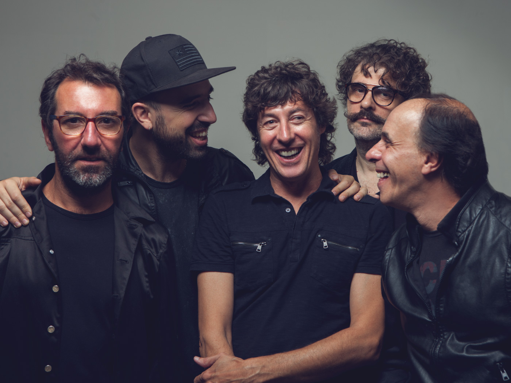

La banda musical de genios
El Cuarteto de Nos (estilizado como Cuarteto de Nos) es un grupo musical uruguayo de rock alternativo y rap rock con elementos pop, electrónica y fusión de varios géneros latinoamericanos, formada en Montevideo en 1980. Está integrada por el cantante y guitarrista Roberto Musso, el bajista y corista Santiago Tavella, el baterista Álvaro Pintos, el guitarrista y corista Gustavo Antuña y el tecladista Santiago Marrero. En 2020 inauguraron un podcast donde interactúan con diferentes personalidades, intercambiando ideas y visiones de las letras y sus creaciones.
Miembros
- Roberto Musso: Voz y guitarra rítmica (1984 - presente).
- Santiago Tavella: Bajo y voz (1984 - presente).
- Álvaro Pintos: Batería y coros (1985 - presente).
- Gustavo Antuña: Guitarra líder y coros (2009 - presente).
- Santiago Marrero: Teclados, bajo y coros (2009 - presente).
Antiguos miembros
- Riki Musso: Guitarra líder, voz y coros (1984 - 2009).
- Andrés Bedó: Teclado (1984 - 1988).
- Leonardo Baroncini: Batería (1984 - 1985).
